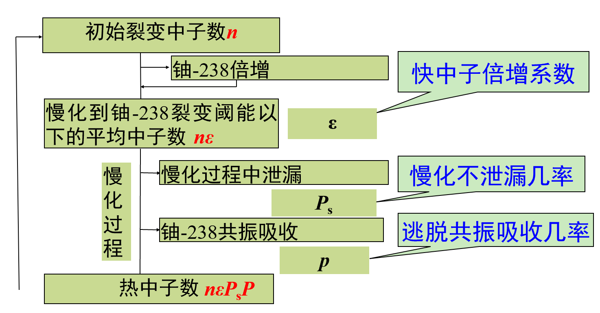
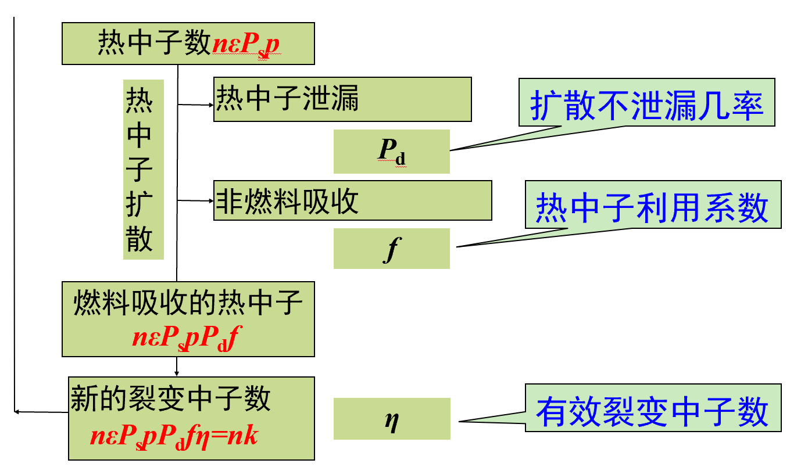
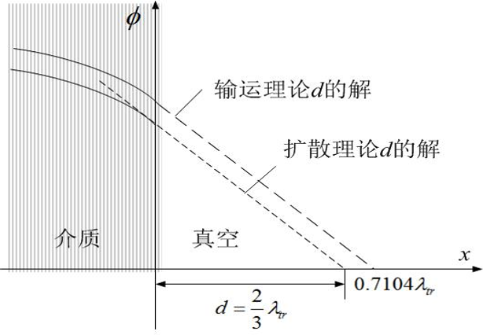

3. 核反应堆中子学过程
3.1 链式裂变反应
有效增殖系数 \(k_{\mathrm{eff}}\)
有效增殖系数 \(k_{\mathrm{eff}}\)：
\[k_{\mathrm{eff}}=\frac{\text{新生一代中子数}}{\text{直属上一代中子数}} =\frac{\text{系统内中子的产生率}}{\text{系统内中子的总消失（吸收 + 泄漏）率}} =k_{\infty}P_L\]- \(k_{\mathrm{eff}}>1\)：超临界，启堆
- \(k_{\mathrm{eff}}=1\)：临界，运行过程
- \(k_{\mathrm{eff}}<1\)：次临界，关堆
无限大介质的增殖系数
无限大介质的增殖系数：
\[k_{\infty}=\frac{\text{系统内中子的产生率}}{\text{系统内中子的吸收率}}\]（几何无关，材料有关）
中子不泄漏几率
中子不泄漏几率：
\[P_L=\frac{\text{系统内中子的吸收率}}{\text{系统内中子的吸收率}+\text{系统内中子的泄漏率}}\]（几何有关）
反应性 \(\rho\)
反应性：指核反应堆有效增值因子偏离临界的相对大小。
\[\rho=\frac{k_{\mathrm{eff}}-1}{k_{\mathrm{eff}}}\]- \(\rho>0\)：超临界
- \(\rho=0\)：临界
- \(\rho<0\)：次临界
单位：
\[1\ \mathrm{mk}=10^{-3}\] \[1\ \mathrm{pcm}=10^{-5}\] \[1\ \text{元}=1\$=1\beta=0.0065\]热中子核反应堆的中子循环


- 快中子倍增系数（\(\varepsilon\)）：由一个初始裂变中子经过可裂变核素裂变后增加所得到的平均中子数
- 慢化不泄漏几率（\(P_s\)）：在慢化过程中，没有泄漏到核反应堆外的中子数所占的比例
- 逃脱共振吸收几率（\(p\)）：快中子在慢化为热中子之前，没有被共振吸收的中子数所占的比例
- 扩散不泄漏几率（\(P_d\)）：在扩散过程中，没有泄漏到核反应堆外的中子数所占的比例
- 热中子利用系数（\(f\)）：被燃料吸收的热中子数占被反应堆中所有物质（燃料和非燃料）吸收的热中子总数的份额
- 有效裂变中子数（\(\eta\)）：燃料每吸收一个热中子所产生的平均裂变中子数
四因子公式
\[k_{\infty}=\varepsilon pf\eta\]六因子公式
\[k_{\mathrm{eff}}=k_{\infty}P_L=\varepsilon pf\eta P_sP_d,\quad P_L=P_sP_d\]3.2 中子的慢化
3.2.1 弹性散射过程动力学
L 系中的弹性散射理论
L 系中，弹性散射理论：
\[\frac{E'}{E}=\frac{1}{2}\left[(1+\alpha)+(1-\alpha)\cos\theta_c\right],\qquad \alpha=\left(\frac{A-1}{A+1}\right)^2\]散射中子能量范围
散射中子能量范围：
\[\alpha E\leq E' \leq E\]散射后中子的能量分布函数
散射后中子的能量分布函数：
\[f(E\to E')=\frac{1}{(1-\alpha)E}\]平均损失能量
平均损失能量：
\[\overline{\Delta E'}=E-\overline{E'}=\frac{1}{2}(1-\alpha)E\]对数能降（勒，Lethargy）
对数能降（勒，Lethargy）：
\[u=\ln\frac{E_0}{E}\]对数能降增量
对数能降增量 \(\Delta u\) 为：
\[\Delta u=u'-u=\ln\frac{E_0}{E'}-\ln\frac{E_0}{E}=\ln\frac{E}{E'}\]平均对数能降增量
平均对数能降增量 \(\xi\)：
\[\xi=1+\frac{\alpha}{1-\alpha}\ln\alpha=1+\frac{(A-1)^2}{2A}\ln\frac{A-1}{A+1}\]存在多种核素时的平均对数能降增量
\[\bar{\xi}=\frac{\sum_i N_i\xi_i\sigma_{si}}{\sum_i N_i\sigma_{si}}\]平均碰撞次数
平均碰撞次数：
\[N_c=\frac{\ln\frac{E_0}{E_2}-\ln\frac{E_0}{E_1}}{\xi}=\frac{1}{\xi}\ln\frac{E_1}{E_2}\]3.2.2 平均散射角余弦
C 系中的平均散射角余弦
C 系中，平均散射角余弦为：
\[\bar{\mu}_c=\int_0^{\pi}\cos\theta_c f(\theta_c)\,d\theta_c=\frac{1}{2}\int_0^{\pi}\cos\theta_c\sin\theta_c\,d\theta_c=0\]L 系中的平均散射角余弦
L 系中：
\[\bar{\mu}_0=\frac{1}{2}\int_0^{\pi}\frac{A\cos\theta_c+1}{\sqrt{A^2+2A\cos\theta_c+1}}\sin\theta_c\,d\theta_c=\frac{2}{3A}\]- 尽管在 C 系内散射是各向同性的，在 L 系内散射是各向异性的，并且平均散射角余弦大于零，表明 L 系内中子散射后沿它原来运动方向运动的概率较大
- L 系平均散射角余弦随靶核质量数减小而增大，故 靶核质量越小，散射各向异性越严重
- 当 \(A\to\infty\) 时，散射趋向于各向同性
3.2.3 慢化剂的选择
慢化能力
慢化能力：
\[\xi\Sigma_s\]慢化比
慢化比：
\[\frac{\xi\Sigma_s}{\Sigma_a}\]3.3 中子的扩散
3.3.1 中子扩散规律（斐克定律）
斐克定律的四个假设
- 介质是无限均匀的
- 在实验室坐标系中散射是各向同性的
- 介质是弱吸收的
- 中子通量密度分布变化是缓慢的
中子流密度 \(\vec{J}\)
中子流密度（\(J\)）：沿着某一方向穿过单位面积的中子数，自 \(x\text{-}y\) 平面从上向下穿过单位面积的中子数为 \(J_z^{-}\)。
斐克定律
斐克定律：
\[\vec{J}=-D\operatorname{grad}\Phi,\qquad D=\frac{\lambda_s}{3}\]- 中子总是从 \(\Phi\) 大的地方向 \(f\) 小的地方扩散
- 中子扩散的速率与 \(\Phi\) 的梯度成正比
修正扩散系数与输运平均自由程
对于假设（2），一般采用修正的扩散系数，即：
\[D=\frac{\lambda_s}{3}\Rightarrow D=\frac{\lambda_{tr}}{3}\]则，输运平均自由程：
\[\lambda_{tr}=\frac{\lambda_s}{1-\mu_0}\]3.3.2 单能中子扩散方程
单能中子扩散方程：
\[\frac{1}{v}\frac{\partial\phi(\vec{r},t)}{\partial t}=S(\vec{r},t)+D\nabla^2\phi(\vec{r},t)-\Sigma_a\phi(\vec{r},t)\]稳态单能中子扩散方程：
\[D\nabla^2\phi(\vec{r})-\Sigma_a\phi(\vec{r})+S(\vec{r})=0\]3.3.3 边界条件与适用范围
求解扩散方程的边界条件
- 在扩散方程适用的范围内，中子通量密度的数值必须是正的、有限的实数
- 在两种不同扩散性质的介质交界面上，垂直于分界面的中子流密度相等，中子通量密度相等
- 真空边界条件

外推距离：\(d=0.7104\lambda_{tr}\)
- 反照边界条件
扩散方程适用范围
- 距真空边界两三个自由程内
- 中子源两三个平均自由程内
- 强吸收体附近
3.4 中子慢化长度、扩散长度和徙动长度
3.4.1 中子扩散长度
热中子扩散长度：热中子从产生至被吸收时所穿行的直线距离方均值的六分之一。
\[L^2=\frac{1}{6}\overline{r_d^2}\]3.4.2 中子慢化长度（热中子年龄）
移出截面
移出截面 \(\Sigma_1\)：一个快中子与原子核发生碰撞后变成热中子的概率，那么单位时间单位体积内慢化为热中子的数量为 \(\Sigma_1\phi_1\)，\(\phi_1\) 为快中子通量密度。
\[\Sigma_1\phi_1=\frac{\Sigma_s\phi_1}{\frac{1}{\xi}\ln\left(\frac{E_0}{E_{th}}\right)}\]（分母可以看作平均碰撞次数，\(E_{th}\) 为分界能 \(1\ \mathrm{eV}\)）
中子慢化长度
中子慢化长度（热中子年龄 \(\tau\)）：快中子从点源出发至慢化到热中子时所穿行的直线距离方均值的六分之一。
\[\overline{r_s^2}=6\tau_{th}\]3.4.3 徙动长度
徙动长度：快中子从产生到被吸收时所穿行的直线距离的方均值的六分之一。
\[M^2=L^2+\tau_{th}=\frac{1}{6}\left(\overline{r_s^2}+\overline{r_d^2}\right)\]3.5 中子慢化时间、扩散时间和中子寿命
中子慢化时间 \(t_s\)
中子慢化时间 \(t_s\)：裂变中子从裂变能慢化到热中子分界能 \(E_{th}\) 所需的平均时间。
\[t_s=-\int_{E_0}^{E_{th}}\frac{1}{\xi v\Sigma_s(E)}\frac{dE}{E}=\sqrt{2m}\frac{\lambda_s}{\xi}\left(\frac{1}{\sqrt{E_{th}}}-\frac{1}{\sqrt{E_0}}\right)\]量级：
\[10^{-6}\sim 10^{-4}\ \mathrm{s}\]中子扩散时间 \(t_d\)
中子扩散时间 \(t_d\)：快中子慢化成热中子后，其扩散至吸收所需的平均时间。
\[t_d=\frac{\lambda_a(E)}{v}=\frac{1}{\Sigma_a(E)v}\]量级：
\[10^{-4}\sim 10^{-2}\ \mathrm{s}\]中子平均寿命 \(l\)
中子平均寿命 \(l\)：快中子自裂变慢化到热中子，再扩散到被吸收所需的平均总时间。
\[l=t_s+t_d\]- 热堆：中子平均寿命大约为 \(10^{-4}\) 秒
- 快堆：中子平均寿命大约为 \(10^{-7}\) 秒